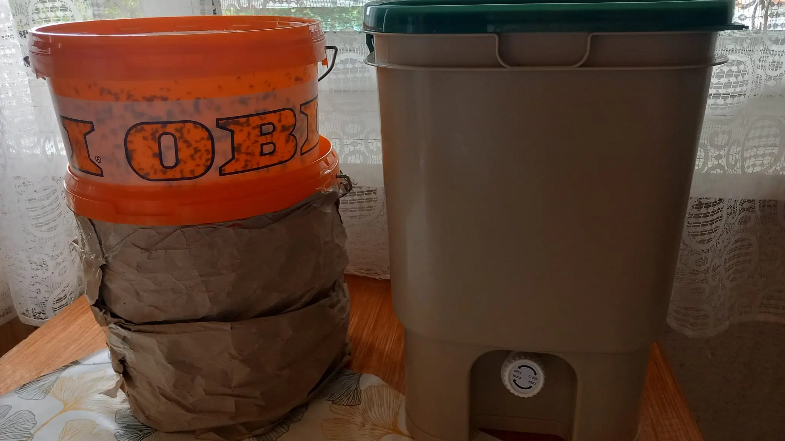
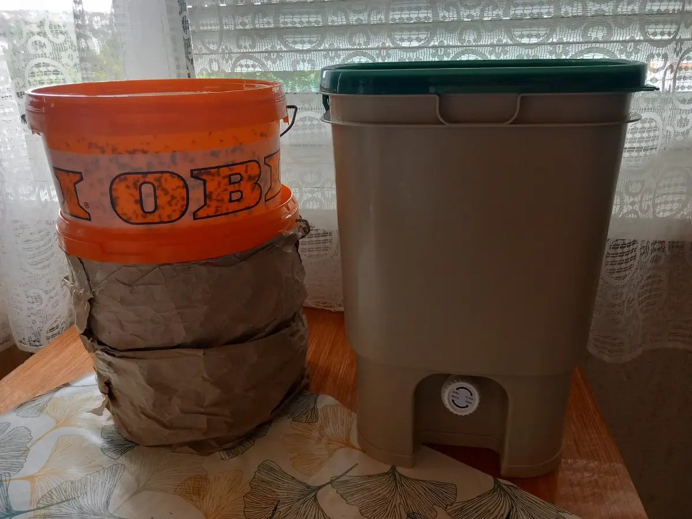

Egy lakásban alapvetően kétféleképpen tudod újrahasznosítani a konyhai zöldhulladékot: gilisztakomposztálással (más néven vermikomposztálással) vagy Bokashi komposztálással. Az előbbi egy oxigéndús (aerob) folyamat, ahol a giliszták végzik a munka oroszlánrészét, míg a Bokashi egy oxigénmentes (anaerob) környezetben működik. Ezen az oldalon mindkét megoldást részletesen bemutatom, saját tapasztalatokra támaszkodva, egyszerű és könnyen érthető formában.
